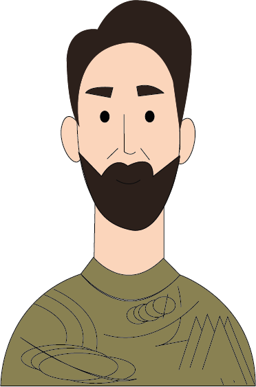

Giacomo Balla


Nascita:
18 Luglio 1871, Torino, Italia
Morte:
1 Marzo 1958, Roma, Italia
Corrente:
Futurismo



Opere più famose: Dinamismo di un cane al guinzaglio 1912; Automobile in accelerazione 1912
Curiosità:Ebbe due figlie, i quali nomi fecero intuire l’avvicinamento dell’artista al Futurismo: si chiamavano Luce ed Elica.
Citazione:“Data l’esistenza della fotografia e della cinematografia, la riproduzione pittorica del vero non interessa né può interessare più nessuno.”